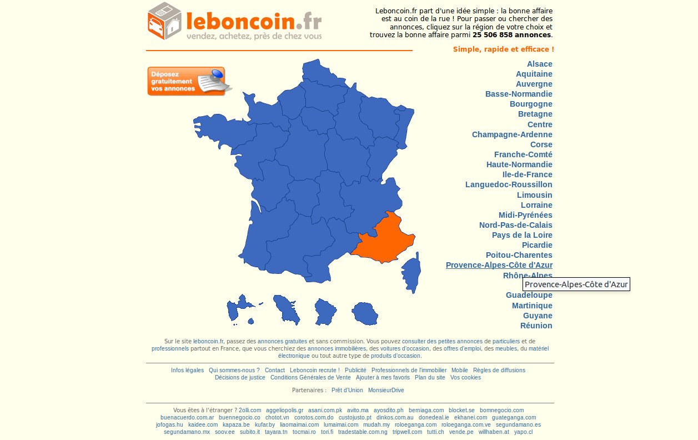
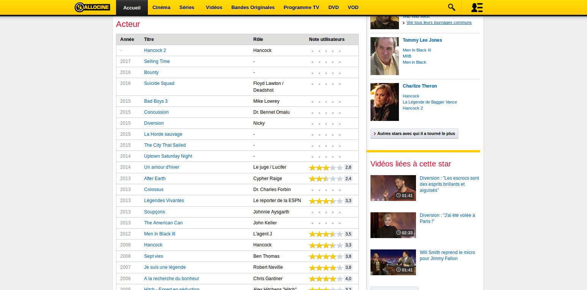
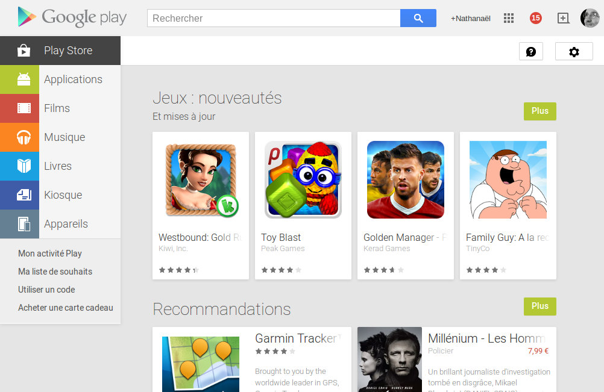
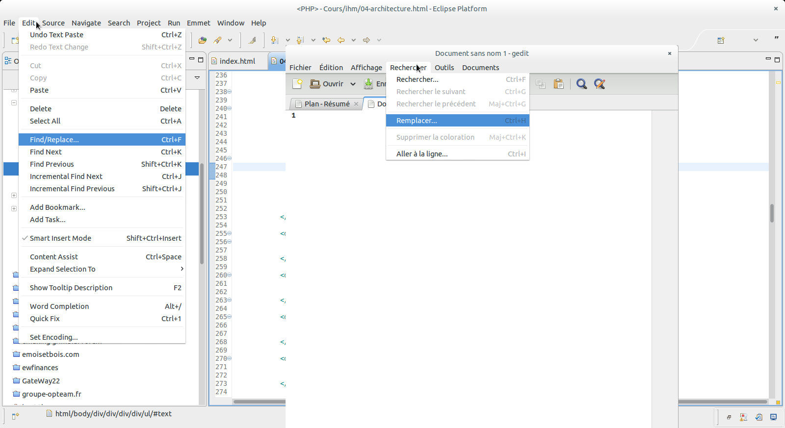

Interface Homme Machine
Architecture de l'information
Nathanaël Martel
Qu'est-ce que l'architecture de l'information ?
«L'architecte de l'information organise le contenu et conçoit la navigation d'un système pour aider l'utilisateur à trouver l'information dont il a besoins.»
Organiser : regrouper et nommer le contenu globalement (collections, domaines…) et localement (tâches, pages, champ…)
La Navigation résulte de cette organisation.
Modèle d'architecture de l'information
Contenu : document, données, objects… problématique de volume, de structure existante
Contexte : objectif commerciaux, culture, technologie, ressources, contraintes…
Utilisateurs : public, tâches, besoins, recherche d'information, comportement, expérience
Pourquoi c'est important ?
Pour l'utilisateur
- Ne pas trouver ce que l'on cherche est le premier problème remonté par les utilisateurs
- Différences de besoins d'informations (connaissance de ce que l'on recherche / exploration)
- Différences de préférence (recherche / exploration)
- Différences d'expertise (niveau linguistique, niveau de connaissance, vocabulaire)
Pourquoi c'est important ?
Pour le commanditaire
Coût pour trouver l'information
Coût de maintenance
Coût de ne pas trouver l'information
Rôle de l'architecte
- Dirige les phases de recommandations et de découverte
- Prend part activement aux phases de conceptions
- … et quasiment rien ensuite
Livrables
- Wireframe
- Croquis des pages principales
- Système de navigation
- Libellé à utiliser (vocabulaire controlé)
- Charte et procédure
Systèmes d'organisation
Tendance naturelle des gens pour organiser l'information
Aide à comprendre, expliciter, contrôler
Composé de :
La structure d'organisation
Le classification
Types de structure d'organisation
Hierarchique : du plus générale au plus précis
Base de données : des grandes quantité d'informations homogène
Linéaire (chronologique)
Contextuel
Hybride
Organisation Hierarchique
- Top-down : Du plus générale au plus précis
- Concept habituel et simple
- Intuitif
Organisation en Base de Données
- Bottom-up: les données en vrac… à trier
- Pratique pour un contenu assez homogène
- Le contenu est «rangé» pour être facile et rapide à rechercher et à récupérer
- Les meta-données sont importante… et donc il faut en contrôler le vocabulaire.
Organisation linéaire
- Une mini-structure pour certains contenus
- Peu évolutif
- Utilisé plus pour des tâches.
Organisation Contextuel
- Fonctionne bien avec des liens hypertexte
- La structure sous-jacente doit être également organisé afin d'éviter de perturber les utilisateurs
Organisation Hybride
- Un peu de tout le reste
- S'adapte à tous les typologies de données/fonctionnalités
- Permet de répondre à plusieurs logique
Organisation Précise
Exemple :
- Alphabétique (annuaire)
- Géographique (atlas)
- Chronolique (twitter)
Characteristics :
- Propre et facile à maintenir
- Tout a une place
- C'est très pratique si l'utilisateur sait ce qu'il cherche
Organisation Précise

Organisation Précise

Organisation Inexacte
Exemple :
- par sujet (boutique)
- par tâche (acheter, chercher, contact)
- par audience (client/pro, vendeur/acheteur)
Characteristics :
- Bordelique
- Plein de recouvrement
- Difficile à maintenir (et à mettre en place ?)
- Pratique pour les gens qui ne savent pas exactement ce qu'ils cherchent.
Organisation Inexacte

Organisation Inexacte
Organisation Inexacte

Organisation Hybride
- Assez courant sur le web
- À utiliser avec précaution :
difficile de se faire un modèle mental de l'organisation
ralentis les utilisateurs qui doivent survoler tout le texte pour trouver les options de navigation
Les Libellés
- Le libellé représente son contenu
- «Contactez nous» représente le nom, téléphone, adresse…
- Le libellé doit déclencher la bonne association dans l'esprit de l'utilisateur.
Les Libellés
Il faut s'efforcer d'avoir un libelé qui est
- Précis est clair (pour la cible)
- Prévisible
- Cohérent
Ils seront ensuite probablement utilisés en navigation de l'application.
Trouver les bons libellés
- Observer les principaux schéma d'organisation (Tri par cartes)
- Prendre une analogie avec quelque chose qui existe déjà
- Analser les logs de recherche
- Regarder la concurrence
Tri par cartes
Une technique utilisée pour comprendre la façon dont l'information devrait être organisée.
Idéalement utilisé sur des groupes d'utilisateurs.
Tri par cartes : procédure
- L'utilisateur reçoit une pile de cartes disposées au hasard
- Chaque carte contient le nom d'un article (et parfois une brève description)
- Utilisateur est invité à trier les cartes en groupes d'articles connexes
- Les utilisateurs peuvent être invités à libeller les groupes résultant
- Version fermée : le libellé des groupes est données.
Trouver les bons libellés
Adapter le résultat pour qu'il soit cohérent
Décider de ce qu'il faut faire avec les bisareries
Trouver les bons libellés
Est-ce que les libellé correspondent ?
Est-ce que vous avez un nombre raisonable de catégorie ? (ni trop ni trop-peu)
Les catégories ont une bonne taille ?
Est-ce qu'il y a besoins de sous catégories ?
Vous avez maintenant une taxonomie pour votre contenu !
Problèmes avec les libellés
La place disponible
L'internationnalisation
Un peu d'imagination est requise
Deuxième bouton google
Cartes de voeux : «juste parce que», «Souhaits et pensées», «Keep in touch», «Juste une note»…
taxonomie pour un restaurant
- Ragoût de lapin
- Salade tiède de radicchio
- Radis & fenouil salade tiède
- Salade niçoise
- Ratatouille
- Poids chiches et soupe poireaux
- Tagliatelles aux champignons
- Salade betterave
- Taboulé
- Tagliatelles au pesto et moules
- Ragoût de palourdes
- Poulet salade tiède de foie
- Ravioli & prosciutto
- Agneau aux abricots Afrique du Nord
Trie par carte sur Trello
Mauvais
- Déjeuners liquides
- Choix de la Méditerranée
- Salades
- Pour carnivores
- Plats de Légumes
- Salades tièdes
Mauvais
- banane
- oranges
- compote de pommes
- fruits exotiques
- agrumes
- en conserve
- cidre
Utilisation de Facettes
Utilisez des facettes (caractéristiques) pour fournir plusieurs catégorisations, par exemple des films avec Gérard Depardieu, les films français, des adaptations de Balzac, des films des années 1980, les films fixés dans Moyen Age, romans historiques ...
Attention à ne pas ajouter de la complexité non plus
Libellés
Évaluer
Demander aux experts dans le domaine si nécessaire
Faites des réunions d'utilisateur, de l'analyse de log, des tests utilisateurs (test A/B)…
Conclusion
Nous avons organisé notre contenu… nous pouvons maintenant construire la navigation.